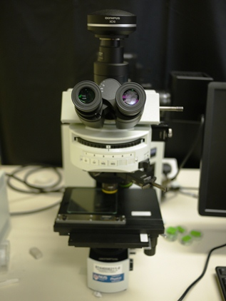
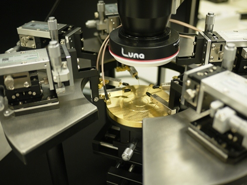
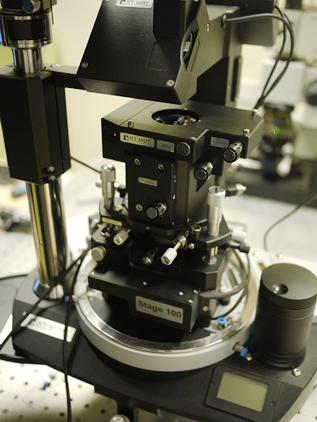
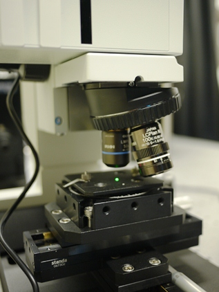
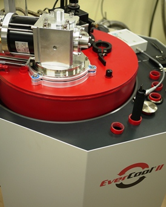
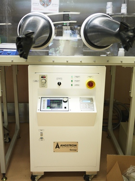
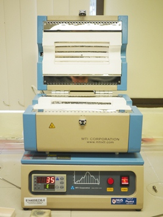
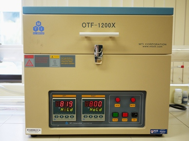
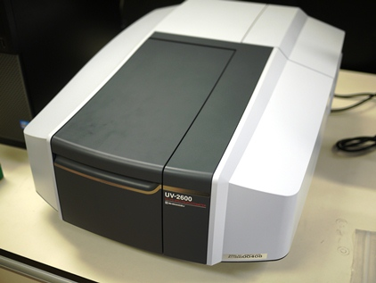
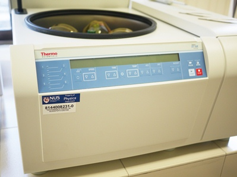

|
Eda Lab Nanomaterials & Devices Group |

| Home | Research | Archive | People | Facilities | Publications | Positions | Links |
|
Facilities
 Optical microscope (Olympus BX51TR)  DC Probe station (Ecopia EPS300)  AFM/confocal microscope (NT-MDT NTEGRA)  Confocal microscope (NT-MDT)  PPMS (Quantum Design EverCool II)  Thermal evaporator (Angstrom Engineering Covap II)  Compact split tube furnace (MTI corporation)  Dual zone split tube furnace (MTI corporation)  UV-vis-NIR spectrophotometer (Shimadzu UV-2600)  Centrifuge (Thermo Scientific Sorvall ST16R) |
© Copyright 2011 Eda Lab. All Rights Reserved.